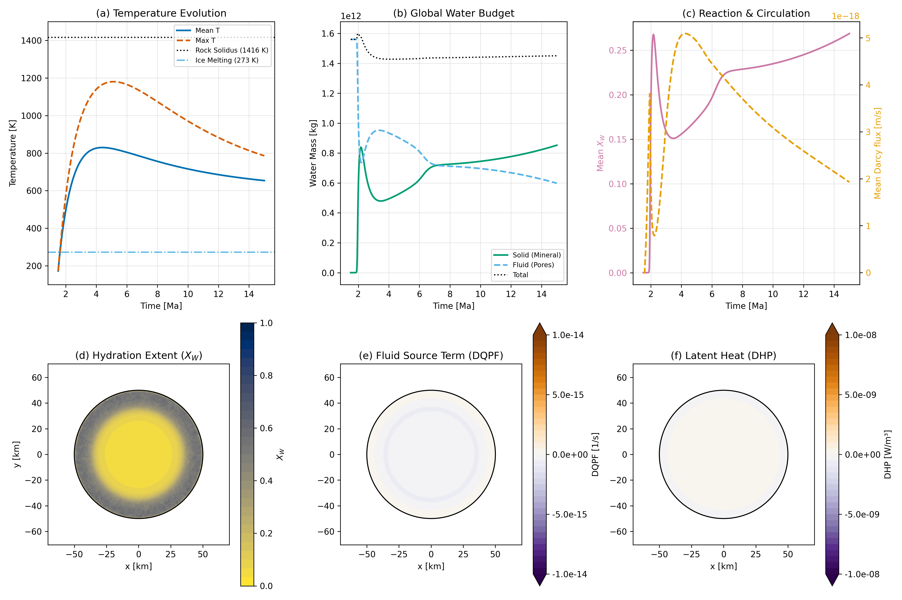
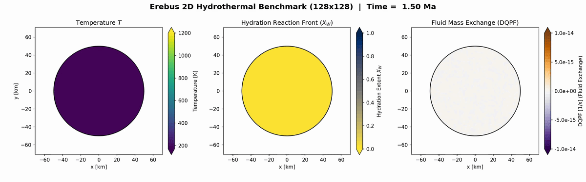
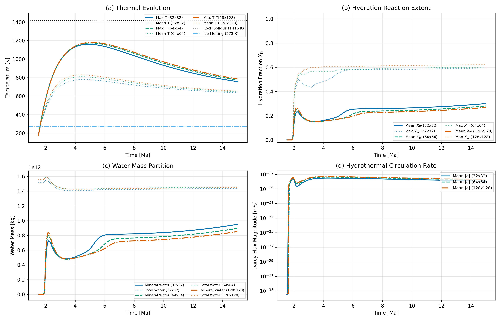
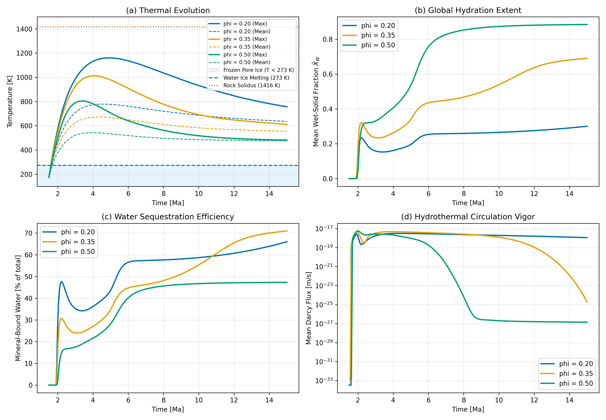

Hydrothermal Water-Rock Reactions
This page validates the coupled hydro-thermo-chemical module in Erebus.jl. The model integrates multi-phase porous fluid flow, thermal history with latent heat, and reaction rates.
2D Hydrothermal Benchmark
The benchmark simulates a 50 km radius planetesimal. It resolves Darcy porous flow, thermal buoyancy, and mineral hydration kinetics simultaneously from 1.5 Ma to 15.0 Ma after CAIs (13.5 Myr duration). The interior starts with dry rock and pore ice. Formation starts at 1.5 Ma after CAIs, which keeps peak interior temperatures below the rock solidus (1416 K). During early heating, radioactive decay of short-lived $^{26}\text{Al}$ heats the rock, melts pore ice, and drives fluid flow.
When temperatures exceed 273 K, pore ice melts. Water-rock reactions then bind pore fluid into serpentine minerals.
The benchmark verifies three core physical mechanisms:
- Reaction Rates: Hydration and dehydration fronts move by Arrhenius kinetics (
hydration_mode = 1,dehydration_mode = 2). - Latent Heat: Reactions release heat during hydration and absorb heat during dehydration through the
DHPterm. - Conserved Mass: Fluid transfer between pores and mineral lattices conserves total water, tracked by
DQPF.
Benchmark Results
The benchmark tracks thermal state, chemical fronts, and fluid motion:

- (a) Temperature Evolution: Radiogenic heat warms the core below the rock solidus (1416 K). Conduction to space cools the interior at later times.
- (b) Global Water Budget: Total water mass changes by less than 10%. Pore water enters hydrous minerals when the hydration front advances.
- (c) Reaction & Circulation: Mean Darcy velocity peaks during the main heating phase. Darcy flow continues past 15 Ma. Circulation persists.
- (d) Hydration Extent ($X_W$): A serpentine shell forms around an anhydrous core. Core reactions cease.
- (e) Fluid Source Term (DQPF): Shows fluid uptake at the hydration front and fluid release during local dehydration.
- (f) Latent Heat (DHP): Shows heat release and heat loss along the reaction boundary.
In all 2D maps, the planetesimal center sits at origin $(0, 0)\text{ km}$. Sticky air outside the planetesimal displays in pure white.
2D Simulation Video
The animation below displays the high-resolution 128x128 benchmark ($1.09\text{ km}$ cells, 262,144 markers) over 15 Ma. The panels show temperature (left), hydration extent $X_W$ with blue indicating hydrous serpentine and yellow indicating dry rock (center), and fluid mass exchange rate DQPF (right). Color limits stay fixed and normalized in all frames.

Grid Convergence (32x32, 64x64, and 128x128)
To test spatial convergence, simulations compare three grid resolutions over 15 Ma: 32x32 ($4.24\text{ km}$ cells), 64x64 ($2.15\text{ km}$ cells), and 128x128 ($1.09\text{ km}$ cells).

Metrics show close agreement between grid levels:
- Thermal Match: Peak core temperature differs by 1.7% between 32x32 and 128x128 (1160.6 K at 32x32 versus 1180.2 K at 128x128). All resolutions remain below the rock solidus (1416 K).
- Reaction Extent: Final mean hydrous phase fraction $\bar{X}_W$ reaches 0.30 at 32x32, 0.28 at 64x64, and 0.27 at 128x128, differing by at most 12%.
- Conserved Water: Total water mass changes by less than 10% during the simulation on all grids (less than 7.0% initial-to-final).
- Flow Velocity: Mean Darcy flux tracks the same profile. Peak circulation rates differ by less than a factor of 1.5.
Porosity Parameter Sweep ($\phi_0 \in [0.20, 0.50]$)
Initial pore fraction $\phi_0$ tests water supply from 0.20 to 0.50. Starting pore fraction sets ice volume, while the permeability law uses reference pore fraction 0.20. Rock grains remain intact.

The parameter sweep reveals four physical responses:
- Thermal Buffer: More pore fluid carries heat away faster. Increasing $\phi_0$ from 0.20 to 0.50 lowers peak core temperature from 1160.6 K to 804.6 K, because hydrothermal advection cools the interior.
- Ice Melting Boundary: Water ice melts at 273 K. Pore ice remains frozen at lower temperatures in the cold outer shell.
- Hydration Bound: Higher water supply permits more serpentine growth. Final mean hydrous fraction $\bar{X}_W$ rises from 0.301 ($\phi_0 = 0.20$) to 0.884 ($\phi_0 = 0.50$).
- Flow Intensity: Peak Darcy velocity increases by a factor of 1.8 (from $3.16 \times 10^{-18}\text{ m/s}$ to $5.66 \times 10^{-18}\text{ m/s}$).
Configurations
Model setup files live in configs/:
hydrothermal_reaction_on_128.toml(Coupled benchmark, 128x128)hydrothermal_reaction_on_64.toml(Coupled benchmark, 64x64)hydrothermal_reaction_on_32.toml(Coupled benchmark, 32x32)hydrothermal_reaction_off_32.toml(Baseline benchmark, reactions disabled)hydrothermal_reaction_sweep_phi20.toml($\phi_0 = 0.20$ sweep)hydrothermal_reaction_sweep_phi35.toml($\phi_0 = 0.35$ sweep)hydrothermal_reaction_sweep_phi50.toml($\phi_0 = 0.50$ sweep)
Verification Test Suite
test/test_reaction_pathways.jl:@testset "Reaction Pathways & Thermodynamic Coupling"@testset "ReactionConfig Schema & Bounds Validation"@testset "Equilibrium Direction and Continuous Phase Boundary"@testset "Two-Way Kinetics Timescales with ReactionConfig"@testset "Exothermic Hydration: Physical Invariants & Fluid Suction"@testset "Endothermic Dehydration: Physical Invariants & Pore Overpressure"@testset "Dynamic Hydrofracture Coupling to Fluid Overpressure"@testset "Reaction Activation Switches and Picard Under-Relaxation"